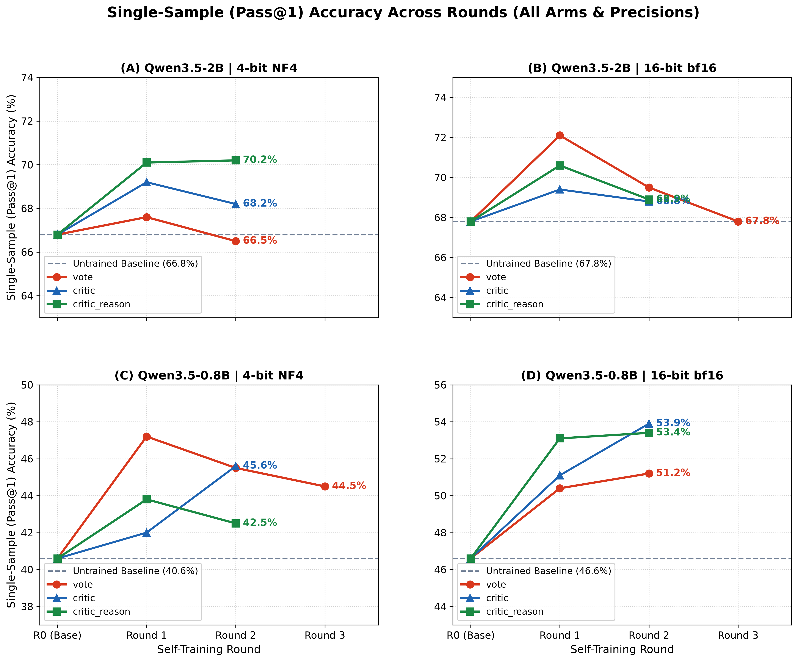
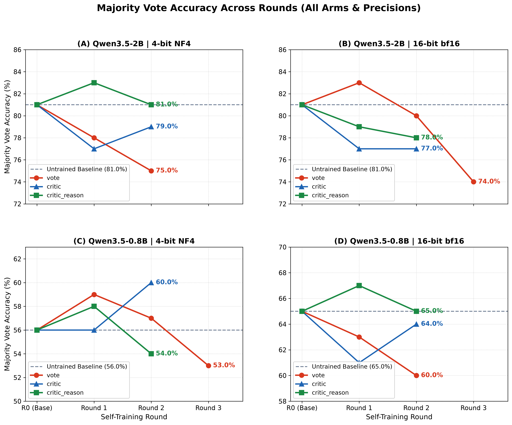
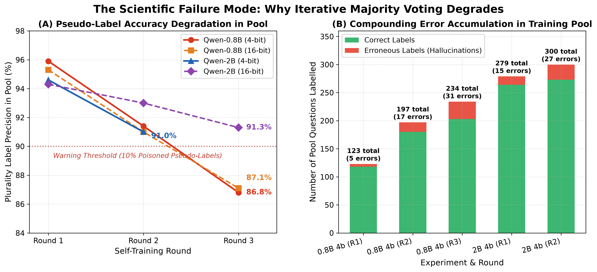

Executive Summary: Multi-Round Self-Training & Verification in Quantized SLMs
Key Empirical Findings (1-Minute Read)
- Scope: up to three rounds of self-training on the model's own votes for Qwen3.5-0.8B and Qwen3.5-2B, at 4-bit NF4 and 16-bit bfloat16. Each run is scored on the same 100 GSM8K test questions, 8 samples each, 512 tokens. One training seed per run.
- Per-sample accuracy rises after round 1 in all 12 round-1 runs (+0.9 to +6.6 points). The 95% interval is above zero in 5 of the 12 (10 of all 26 runs). Most of the gain comes from fewer samples being cut off at 512 tokens: cut-offs fall in every run.
- The majority vote does not improve. Round-1 changes range from −4 to +3 points, and later rounds from −7 to +4. Only one interval excludes zero, a decline (2B 16-bit vote, round 3, −7.0). For scale, two independent runs of the same untrained 0.8B model differ on a 100-question vote by up to ±7.5 (16-bit) or ±8.0 (4-bit) points (95%). Per-round changes cannot be told apart from re-running the model, so neither a round-1 peak nor a steady decline is shown.
- Pool labels get less precise as the model labels more (0.8B 4-bit vote arm): label precision falls 95.9% → 91.4% → 86.8%, while labelled questions rise 123 → 197 → 234 and wrong labels 5 → 17 → 31 (about 6×). Whether this drift causes any change on the test set is not established. Test changes between rounds are within noise, and with a fixed 200 training steps later rounds also train fewer epochs.
- Program-of-thought is a weaker solver than prose in all four cells (200 questions, one run per cell, all valid). Per sample, programs score 8.1 to 16.4 points below prose. The pre-registered mixed vote failed at 0.8B and could not be tested at 2B. The one gain is exploratory: at 2B 4-bit, letting programs break prose ties adds +2.5 [+0.5, +5.0] points, or 5 questions, and needs testing on new questions.
What these runs cannot show yet
- Small, single-seed cells. Each cell is one training seed on 100 questions. At 2B, a second seed of the same arm moved the vote by 4–5 points, as much as any gap between arms.
- Mixed generation settings. Round 0 and the arms were generated on different GPUs (T4 or L4) with batch sizes of 32–128. In an earlier pilot, batch size alone moved the untrained 4-bit vote by 11 points.
- No control for "learning to finish". No run has yet trained on finished traces that the vote did not select. Without it, a gain from the votes cannot be told apart from the model learning to write solutions that fit in 512 tokens. Cut-off samples are almost all solutions that stop mid-way: 90–99% hold no answer line and do not repeat.
- No evidence that precision changes the effect. The 4-bit training gain minus the 16-bit training gain per sample ranges from −4.9 to +2.9 over 14 paired runs. The one interval that excludes zero favours 16-bit.
1. Scorecard: Per-Sample Accuracy and Majority Vote Across Rounds
Each cell gives the accuracy, the change from the untrained round 0 in points, and its 95% interval from resampling the 100 test questions. A badge is coloured only when the interval excludes zero. Per sample counts cut-off samples as wrong, and cut-off samples do not vote. A dash marks a run that does not exist or has not finished.
| Model & Precision | Metric | Baseline (R0) | vote (Plurality) | critic (Filtered) | critic_reason (Co-Trained) | ||||
|---|---|---|---|---|---|---|---|---|---|
| R1 | R2 | R3 | R1 | R2 | R1 | R2 | |||
| Qwen-2B (4-bit) | Per sample | 66.8% | 67.6% +0.9 [-2.0, +3.9] |
66.5% -0.2 [-3.8, +3.4] |
— | 69.2% +2.5 [-0.6, +5.6] |
68.2% +1.5 [-1.9, +4.8] |
70.1% +3.4 [+0.2, +6.5] |
70.2% +3.5 [+0.0, +7.1] |
| Vote | 81.0% | 78.0% -3.0 [-8.0, +2.0] |
75.0% -6.0 [-12.0, +0.0] |
— | 77.0% -4.0 [-10.0, +1.0] |
79.0% -2.0 [-8.0, +3.0] |
83.0% +2.0 [-3.0, +7.0] |
81.0% +0.0 [-7.0, +7.0] |
|
| Qwen-2B (16-bit) | Per sample | 67.8% | 72.1% +4.4 [+1.1, +7.6] |
69.5% +1.8 [-1.9, +5.4] |
67.8% +0.0 [-3.5, +3.4] |
69.4% +1.6 [-2.0, +5.4] |
68.8% +1.0 [-2.9, +4.9] |
70.6% +2.9 [-0.5, +6.6] |
68.9% +1.1 [-2.1, +4.2] |
| Vote | 81.0% | 83.0% +2.0 [-3.0, +7.0] |
80.0% -1.0 [-8.0, +6.0] |
74.0% -7.0 [-13.0, -1.0] |
77.0% -4.0 [-11.0, +2.0] |
77.0% -4.0 [-11.0, +2.0] |
79.0% -2.0 [-9.0, +5.0] |
78.0% -3.0 [-9.0, +3.0] |
|
| Qwen-0.8B (4-bit) | Per sample | 40.6% | 47.2% +6.6 [+2.8, +10.5] |
45.5% +4.9 [+0.2, +9.4] |
44.5% +3.9 [+0.0, +7.9] |
42.0% +1.4 [-2.2, +4.8] |
45.6% +5.0 [+1.1, +9.0] |
43.8% +3.1 [-1.0, +7.0] |
42.5% +1.9 [-2.6, +6.2] |
| Vote | 56.0% | 59.0% +3.0 [-5.0, +12.0] |
57.0% +1.0 [-9.0, +10.0] |
53.0% -3.0 [-11.0, +4.0] |
56.0% +0.0 [-8.0, +8.0] |
60.0% +4.0 [-4.0, +12.0] |
58.0% +2.0 [-7.0, +10.0] |
54.0% -2.0 [-11.0, +6.0] |
|
| Qwen-0.8B (16-bit) | Per sample | 46.6% | 50.4% +3.8 [-0.2, +8.0] |
51.2% +4.6 [+0.6, +8.8] |
— | 51.1% +4.5 [+0.8, +8.6] |
53.9% +7.2 [+3.8, +10.8] |
53.1% +6.5 [+2.8, +10.8] |
53.4% +6.8 [+3.1, +10.4] |
| Vote | 65.0% | 63.0% -2.0 [-8.0, +5.0] |
60.0% -5.0 [-12.0, +2.0] |
— | 61.0% -4.0 [-12.0, +4.0] |
64.0% -1.0 [-8.0, +6.0] |
67.0% +2.0 [-5.0, +9.0] |
65.0% +0.0 [-8.0, +7.0] |
|
2. Per-Sample Accuracy Across Rounds
Per-sample accuracy is the share of all samples that finish within 512 tokens with the right answer. It therefore measures finishing as well as reasoning, and finishing is what training changes most.

3. Plurality Vote Trajectories Across Rounds
Plurality vote over 8 sampled solutions per question. No trained run moves the vote further than two independent runs of the same untrained model differ (±7.5 points at 16-bit, ±8.0 at 4-bit, 95%, on 100 questions).

4. Program-of-Thought at 16-bit and 4-bit
The test: can a Python interpreter supply the outside check the model lacks? With prompt variant program, the model writes a solve() program, which is run in a sandbox. Prose and programs are compared on the same first 200 GSM8K test questions, 8 samples each, 512 tokens. All four cells passed the validity gate (at least 70% of programs run).
Programs against prose
Failed programs and cut-off prose samples count as wrong. Intervals are 95%, from resampling the 200 questions.
| Model & Precision | Programs ran | Programs cut off | Per sample: prose | Per sample: programs | Programs − prose | Vote: prose | Vote: programs only | Programs − prose |
|---|---|---|---|---|---|---|---|---|
| Qwen-2B (4-bit) | 79.9% | 9.3% | 64.1% | 50.2% | -13.9 [-17.8, -9.8] |
77.0% | 69.0% | -8.0 [-14.5, -1.5] |
| Qwen-2B (16-bit) | 89.0% | 5.0% | 68.1% | 60.1% | -8.1 [-11.9, -4.1] |
82.0% | 76.5% | -5.5 [-10.0, -1.0] |
| Qwen-0.8B (4-bit) | 90.4% | 1.1% | 37.9% | 26.9% | -11.1 [-14.7, -7.3] |
54.5% | 37.0% | -17.5 [-24.0, -10.5] |
| Qwen-0.8B (16-bit) | 81.9% | 0.9% | 48.4% | 32.0% | -16.4 [-20.2, -12.6] |
68.5% | 45.0% | -23.5 [-30.0, -17.0] |
Can programs improve the prose vote?
Each column is a change from the 8-sample prose vote, in points. The mixed vote pools 8 prose and 8 program answers. The tie-break keeps the prose vote and lets programs choose only when prose answers tie.
| Model & Precision | Mixed vote | Tie-break | Tie-break, prose ties split evenly | Tied prose votes (of 200) | Tie-break: questions won, lost |
|---|---|---|---|---|---|
| Qwen-2B (4-bit) | +1.0 [-2.5, +4.5] |
+2.5 [+0.5, +5.0] |
+2.6 [+1.0, +4.4] |
23 | 5, 0 |
| Qwen-2B (16-bit) | +1.0 [-2.0, +4.0] |
+0.0 [-1.5, +1.5] |
-0.3 [-1.2, +0.7] |
11 | 1, 1 |
| Qwen-0.8B (4-bit) | +2.0 [-2.0, +6.0] |
+2.0 [-0.5, +4.5] |
+1.0 [-0.9, +3.2] |
51 | 5, 1 |
| Qwen-0.8B (16-bit) | +0.0 [-4.0, +4.0] |
+0.0 [-2.5, +2.0] |
+0.4 [-1.2, +1.9] |
33 | 3, 3 |
Programs are a weaker solver than prose in all four cells; the one gain is a small tie-break at 2B 4-bit
- Pre-registered test failed where it could be run. The mixed vote had to beat a 16-sample prose vote with an interval above zero. At 0.8B it did not: −5.0 [−10.5, +0.0] at 4-bit and +0.0 [−5.0, +5.0] at 16-bit. 2B has no independent 16-sample prose run, so this test could not be run there.
- The tie-break gain is small and exploratory. At 2B 4-bit it adds +2.5 points, which is 5 questions out of 200. It also holds when prose ties are split evenly, so it is not an artifact of the tie rule. But it is a secondary selector, it appears in one cell of four, and it is the only one of 16 selector comparisons whose interval clearly excludes zero. About one such result is expected by chance. It needs testing on new questions.
- Where the prose vote is wrong: at 0.8B, working programs repeat the wrong answer less often than new prose samples do, and are also right less often (4-bit: 12% vs 20% repeat, 9% vs 16% right; 16-bit: 14% vs 20% repeat, 9% vs 16% right). They neither carry the mistake over nor fix it. At 2B, working programs are right more often than they repeat the wrong answer (4-bit: 20.6% vs 16.0%, 45 questions; 16-bit: 24.2% vs 18.1%, 32 questions). Without a 16-sample prose run we cannot say whether a new prose sample would do just as well.
- No consistent link with precision. 4-bit lowers programs less than prose at 0.8B (−5.1 vs −10.5 per sample) but more at 2B (−9.8 vs −4.0). The direction flips with model size, and the share of programs that run also moves in opposite directions (0.8B up, 2B down).
- Limits. One run per cell, 200 questions. Program and prose runs were generated separately, not side by side.
Context, not a comparison with our runs: PAL (Gao et al., 2023) reports 72.0% on GSM8K with Codex writing programs, against 65.6% for chain-of-thought with the same Codex model. Its often-quoted 15-point margin is against PaLM-540B chain-of-thought, a different model. An arithmetic checker fires on only 0.3–2% of finished 0.8B 4-bit traces. That suggests most errors are in setting up the problem, not in the arithmetic, and an interpreter cannot fix those (interpretation, not tested).
5. Label Drift in the Pool
Each round re-labels the 500 pool questions with the model trained in the previous round. Reference answers are read only to score the labels for this page, never to choose them. Drift is measured, but it is not shown to cause the test results: no change between rounds on the test set is significant, and the fixed 200 training steps of 8 examples mean later rounds also see fewer epochs (1.87 on 854 solutions, 1.12 on 1,425, 0.96 on 1,673). Testing the cause needs a frozen-label run (round 0 labels in every round) with fixed epochs.
